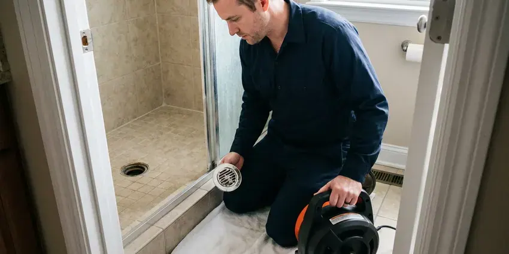

Drain Unblocking in Parma, OH
HRL Plumbing unblocks drains across Parma, OH, from a single tub to a main line backing up into the basement.
- Same-Day Service
- Prompt Arrival
- Backed Guarantee
- Price Given Before We Start

Get the Sink or Toilet Draining Again in Parma, OH
Our techs clear the blockage and test the fixture before leaving.
Drain Unblocking in Parma, OH for Toilets, Tubs, Sinks and Showers
HRL Plumbing unblocks drains throughout Parma, OH that are stopped by grease, roots, wipes and anything else that ended up in the pipe. Our trucks carry closet augers for toilets, drum machines for sinks and tubs, and heavier sectional cables for main lines, so one visit usually covers it. No chemicals used.
Work we handle every week:
- Pinpointing whether the block is in the fixture, branch or main
- Sewer Camera Checks After Tough Blockages
- Toilet pulls to remove toys, phones and solid objects

Additional Drain Services Services in Parma, OH
From stubborn kitchen clogs to main sewer backups, our drain services in Parma, OH restore full flow fast and keep it that way.


Drain Cleaning service for Parma homeowners


Customers
Why Choose HRL Plumbing for Drain Unblocking in Parma, OH?
Clearing the blockage is half the job. The other half is telling you what caused it, whether that is grease habits, a low-flow toilet with a narrow trapway or roots getting into the main through a cracked joint. Knowing prevents repeats. We point out what we find.
- Local Causes Known, Roots in older Ohio laterals and scale from hard water are things we see every week.
- Plain Explanations, We explain the problem and the price up front, in plain words.
- Local Experience, Our plumbers know the water quality and soil in Ohio that often feed into blockages.
Citywide Coverage
From the center of Parma to the outer suburbs, our unblocking service covers the whole area. Old homes bring roots and new homes bring wipes, and every truck carries tools for both. No second trip needed.
Experienced Team
Our crew has pulled baby wipes, dental floss, toys and cell phones out of drains. Odd objects need patience, and they know how to get them out without breaking anything. Nothing surprises them.
Safety-First Approach
Protecting your property and our crew comes first. Protective gear, safe machine handling and a clear work area keep everyone safe. Pets should stay inside.
Trusted Certified Parma Plumbing Services Professionals
At HRL Plumbing, we are proud to offer certified plumbing services throughout Parma, OH. Credentials matter in this trade. Every repair, install and maintenance visit follows strict safety and quality rules, and the plumbers doing the work carry recognized industry credentials.
Call Us Now PHCC Plumbing Contractor Recognition
PHCC Plumbing Contractor Recognition Better Business Bureau (BBB) Accreditation
Better Business Bureau (BBB) Accreditation Angi Certified Pro
Angi Certified Pro ISO 9001 Quality Management Certification
ISO 9001 Quality Management CertificationBlocked Drains We Clear in Parma, OH
Bathroom Sink and Tub Unblocking in Parma, OH
Hair mats are the usual bathroom culprit. Hair catches on the stopper, soap glues it in place, and soon the basin barely drains. Homeowners around Parma often install a softener to protect water heaters and reduce spotting on fixtures. We clean the stopper and trap and check the P-trap seal. A hair catcher costs a few dollars and saves a service call.

Blocked Shower and Tub Drains in Parma
Shower drains block slowly, then all at once. Hair and scum build until one day the shower will not drain at all. We start at the strainer. Deeper clogs get a cable through the overflow.
Main Sewer Blockages in Older Homes in Parma, OH
Older clay laterals invite roots. Ohio has a lot of older housing, and many homes still have galvanized supply pipe and cast iron drains that are wearing out. Roots grow through old clay and cast iron joints into a mat that catches waste until the house backs up. We cut the roots out. A camera run afterward shows the entry point.
Blocked Toilet Help in Parma
Toilets block from paper, wipes and objects. Paper, wipes and toys are all routine, and a closet auger clears most of them quickly. Porcelain is protected. Repeat clogs can point to the toilet itself.
Emergency Drain Unblocking in Parma
A toilet overflowing at midnight is an emergency. Our on-call tech brings tools for toilets, sinks and the main line, clears the blockage and helps you mop up the overflow so the floor does not stay wet overnight. After-hours rates apply. You hear that price on the phone before the truck leaves.
After-Hours Unblocking in Parma, OH
Backups do not keep office hours. A full house, one bathroom or a basement drain backing up means our on-call tech comes tonight. First we stop the overflow. The fix comes next.
Commercial Blocked Drains in Parma
A blocked restroom can close a store. Toilets, urinals, floor drains and kitchen lines in all kinds of businesses get cleared fast. Off-hours visits are available. Service reports go in your records.

Professional Unblocking Versus DIY in Parma, OH
Rental augers and store chemicals look cheaper. DIY attempts often push the clog further or leave corrosive water in the sink. We quote a flat price. The work is guaranteed in writing.
Blocked Drain Techs Near You in Parma, OH
Working locally, we see the same causes over and over. Most calls are wipes, grease or hair, and we know each one well enough to clear it fast. Practical advice included.
Searching for drain unblocking near you in Parma, OH? HRL Plumbing has trucks working the area every day. Our trucks are close, so a same-day visit within a few hours is common. Close is faster.
HRL Plumbing at a Glance
- Fully licensed plumbing team covering Parma, OH
- 24/7 emergency service with same-day scheduling
- Upfront, flat-rate pricing before work begins
- 4.9-star rated by 673+ Ohio customers
Parma Map
Parma Information
- Population
- 78,951
- Area codes
- 440/216/330
- Service area
- Parma and towns within a 40 mile drive
- Nearby
- Cleveland, Lakewood, Cuyahoga Falls, Euclid
Scale narrows old drain pipe in Parma, OH homes until one handful of hair stops it cold. Homeowners around Parma often install a softener to protect water heaters and reduce spotting on fixtures.
Talk to a Plumber
Call HRL Plumbing for reliable plumbing work done by licensed pros in Parma, OH.
Our Specialized Plumbing Services in Parma, OH
At HRL Plumbing, you get every kind of plumbing service from one company across Parma, OH. From leak detection to full system installs, our team works fast and charges fair prices on homes and commercial properties alike. Take a look at our core services below:


How We Clear a Blocked Drain in Parma, OH
We follow a set routine on each blocked drain call in Parma, OH.
Call for a Price
Call (740) 449-7505 and tell us what happened. We give you a price range and send a tech.
Locate the Blockage
Your tech checks connected fixtures to find it. Then we pick the tool.
Clear and Confirm
We remove the blockage and run plenty of water. We share prevention tips.
Frequently Asked Questions About Drain Unblocking in Parma
Plan on $150 to $350 for most single-fixture blockages. Main sewer blockages that need jetting or a camera inspection usually cost $400 to $800 or more, depending on how far out the clog sits and what it is made of. We write it up first.
Slow drains, gurgling and sewer smells are early warnings. Backups between fixtures point to a shared line that a plunger cannot reach. Waiting usually makes it worse.
One to two hours for most single-fixture jobs. Mains with camera or jetting work run three to five hours.
Grease in kitchens, hair in bathrooms and roots in the main. Basements are standard in most homes, and many rely on sump pumps to handle groundwater away during wet periods. Hard water scale also narrows older pipe over the years, so a smaller amount of debris is enough to block it completely. Flushable wipes add to it.
We advise against it. They rarely clear a full blockage and leave dangerous corrosive water behind. Cables are safer.
Not for clearing a blockage. Repairs or replacements may need a permit, which we pull for you.
Simple unblocking does not need a permit in most places, including Parma, OH. If clearing the drain leads to a repair or replacement of a sewer line, the local building department will usually want a permit, and we take care of it.
We would rather you did not. They often fail and can damage pipe. Let us know if you did.
What Our Customers Say About Our Plumbing Experts

Sofia M.
Two new toilets went in during one visit. The tech set them on new wax rings and swapped the old supply lines. He also noticed our bathroom faucet dripping and replaced the cartridge while he was there. No mess left behind.
Toilet Installation · Euclid, OH
Marcus H.
Grease from the fryer line kept clogging the kitchen drain at my diner. HRL Plumbing hydro jetted the line after closing, showed me the buildup on camera, and set us up on a quarterly cleaning so it does not catch us on a Friday again.
Drain Cleaning · Akron, OHJames P.
Our restaurant had a slow leak at the hand sink that was rotting the cabinet base. HRL Plumbing came in at six in the morning before prep, replaced the trap and both supply lines, and was packed up before my first cook clocked in.
Commercial Plumbing · Cleveland, OH
Carlos V.
Our house still had galvanized pipe, and upstairs the shower was a trickle. The crew repiped everything in PEX over three days and patched every drywall hole before they left. The pressure difference is night and day.
Repiping · Euclid, OHJessica T.
We were adding a gas range in a kitchen remodel and needed a new line run from the meter. The plumber pulled the permit, ran the pipe through the crawl space, and had it inspected and approved within the week.
Gas Line Repair · Cuyahoga Falls, OHLaura S.
Our 40 gallon tank started leaking from the bottom after thirteen years. The tech hauled the old one out, set a new unit with a fresh expansion tank, and had hot water running in about four hours. He took the old tank with him too.
Water Heater Replacement · Cuyahoga Falls, OH